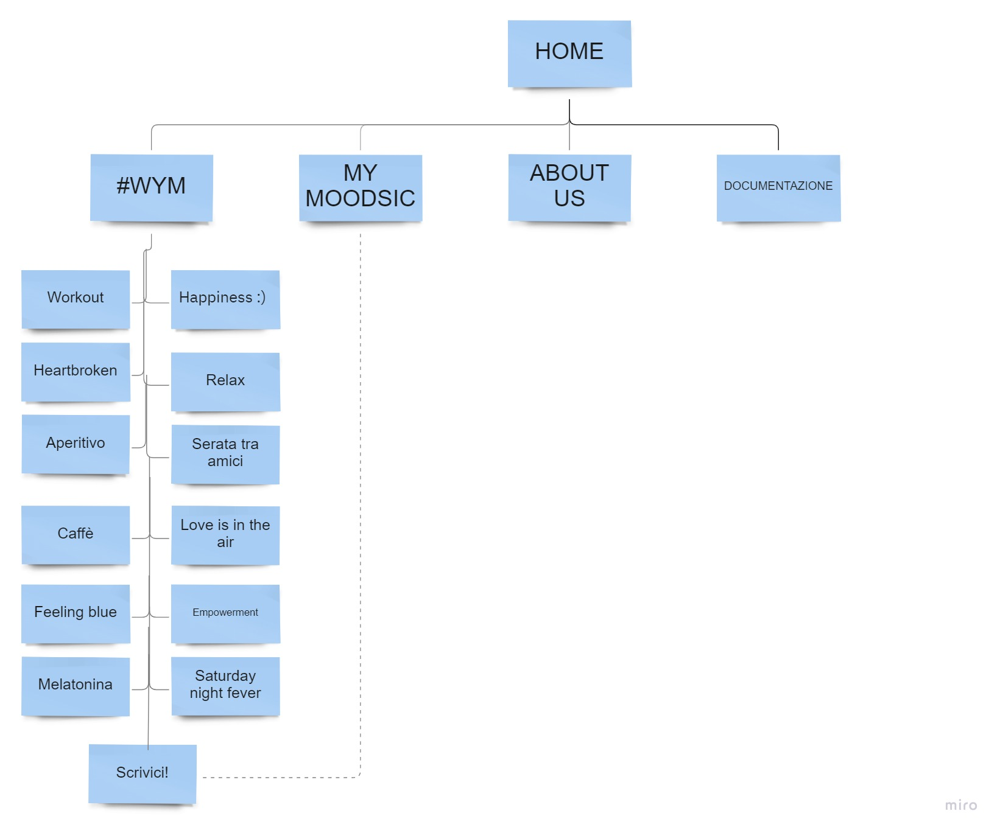

Abstract
Moodsic è una sito che nasce con lo scopo di fornire una selezione di playlist in base al “mood” dell’utente per far sì che non si trovi mai a corto di musica. A differenza degli altri siti di streaming musicali che offrono un servizio simile, moodsic è completamente gratuito ed accessibile a qualsiasi persona appassionata di musica. Grazie alla sua interfaccia semplice e lineare, l’utente sarà in grado di muoversi sul sito in maniera semplice ed intuitiva e di trovare tutto ciò di cui ha bisogno in pochi click.
Project Management Plan
1. Benchmarking
Obiettivi
L’obiettivo principale di Moodsic è quello di offrire una selezione di playlist completamente gratuite adatte ad ogni (o quasi) occasione in modo che l’utente possa sempre avere a disposizione una serie di brani che più si addicono al suo Mood attuale, senza "perdere tempo" ascoltando musica potenzialmente in grado di rovinare l'atmosfera.
Target
Considerato il servizio che offre il sito, il target di riferimento è abbastanza ampio. In linea generale, Moodsic si rivolge a tutti coloro che sono appassionati di musica. Più precisamente la fascia d'età a cui il sito punta sono gli adolescenti e i giovani ( indicativamente dai 16 ai 30 anni).
Competitors
I principali competitors sono tutti quei siti che mettono a disposizione serie di playlist dedicate a diversi tipi di occasioni. I principali sono:
Spotify--> Servizio musicale svedese che offre streaming on demand di brani . Su questo sito è presente la sezione “Mood” nella quale sono presenti varie playlist organizzate in base a diverse occasioni ( es. Pulizie di casa, Jazz vibes, Feelin’ myself).
Amazon music--> Realizzato sulla falsariga di Spotify, anche questo servizio musicale offre una serie di playlist per diverse occasioni (es. Weekend sul divano, Tutta la notte, Buona giornata).
Apple music. Anche Apple Music presenta una sezione chiamata “Just ask Siri” che essenzialmente si comporta come la sezione “Mood” di Spotify.
2. Struttura e layout
Architettura del sito:
Wireframe
Homepage
.jpg)
#WYM
.jpg)
#WYM
.jpg)
About us
.jpg)
Look and Feel
Per quanto riguarda le font utilizzate nel sito, ho optato per tre diverse opzioni (tutte prese da Google fonts) : Poiret one per i vari titoli e sottotitoli, Thasadith per la scrittura dei paragrafi e dei testi interni ai bottoni ed infine Amatic SC per i titoli di ciascuna playlist.
Per quanto riguarda le scelte cromatiche, ho deciso di utilizzare un'ampia gamma di colori. Nonostante le tinte principali del sito siano il bianco e il grigio tenue ( che a parer mio gli conferiscono una grafica molto elegante ), ciascuna playlist è caratterizzata dal colore che meglio di addice al mood che essa rappresenta. Il colore di sfondo della card è di una tonalità tendente al pastello che richiama la tinta più accesa utilizzata per il bottone della card medesima.
3. Linguaggi e strumenti
Il sito è stato realizzato utilizzando i linguaggi di HTML E CSS. Come strumenti sono stati utilizzati SublimeText2 come text editor; Bootstrap per la realizzazione del menù e delle card utilizzate per le playlist; W3schools; fontawsome per le icone; Github per la pubblicazione del sito. Le immagini invece sono state prese direttamente da Google con le licenze creative commons.
Communication Strategy
1. Background
Moodsic è un sito efficace in quanto presenta innanzitutto un’interfaccia facile ed intuitiva tale per cui è molto semplice districarsi tra le varie sezioni. Architettonicamente parlando, il sito presenta poche ramificazioni e ciò rende difficile all'utente perdersi tra le sue aree.
A differenza degli altri competitor, in cui talvolta si richiede una certa abilità di muoversi sul web per identificare la sezione “mood”, su questo sito la sezione è facilmente individuabile e raggiungibile anche per coloro che magari non sono nativi digitali.
Inoltre, il fatto che l’utente possa effettivamente proporre l*i stesso playlist, l* invita a ritornare sul sito per vedere se i suoi consigli sono stati accettati e se la sua playlist compare nella pagina #WYM.
Nonostante non sia un servizio completamente innovativo, il suo punto di forza sta nella sua gratuità (non richiede un abbonamento) a differenza dei competitor
2. Obiettivi comunicativi
Per quanto riguarda gli obiettivi comunicativi del sito sono:
a) coinvolgere emotivamente l’utente;
b) fare in modo che si fidelizzi al nostro sito consentendogli anche di interagire con noi (sia attraverso la sezione My moodsic sia attraverso i social media );
c) fare in modo che condivida il sito in modo da poter massimizzare il numero di ingressi;
d) offrire all'utente una piacevole user experience;
3. Target audience e messaggi
Il target, come detto in precedenza, è abbastanza ampio ed include tutti coloro che sono appassionati di musica. Data la semplicità grafica con cui il sito è realizzato, può essere facilmente utilizzato da persone di tutte le età; ciò non toglie che il target demografico primario sono i giovani di un’età compresa tra i 16-35 anni che hanno una maggiore dimestichezza con il web e le sue funzioni. Per raggiungere questo target lo strumento più efficace restano i social, soprattutto Instagram.
4. Promozione
Per promuovere il sito, ho deciso di creare un post sul mio profilo personale social. Inoltre, ho utilizzato i canali Whatsapp e Telegram per condividere il mio progetto con amici, colleghi, familiari e persone interessate ad esso.